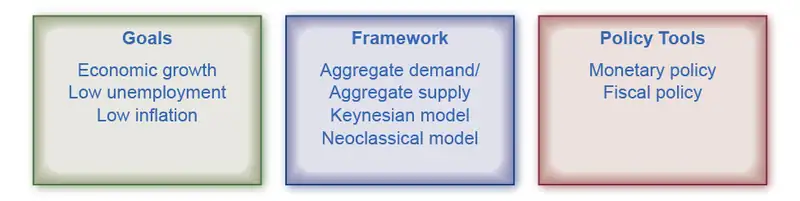
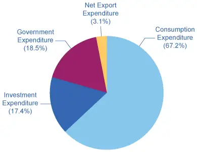
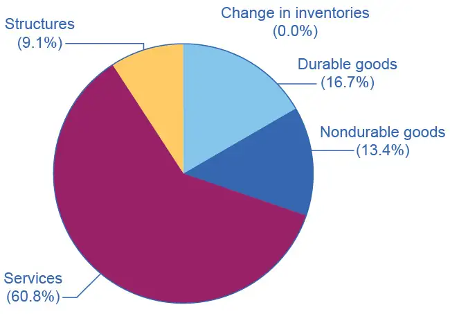
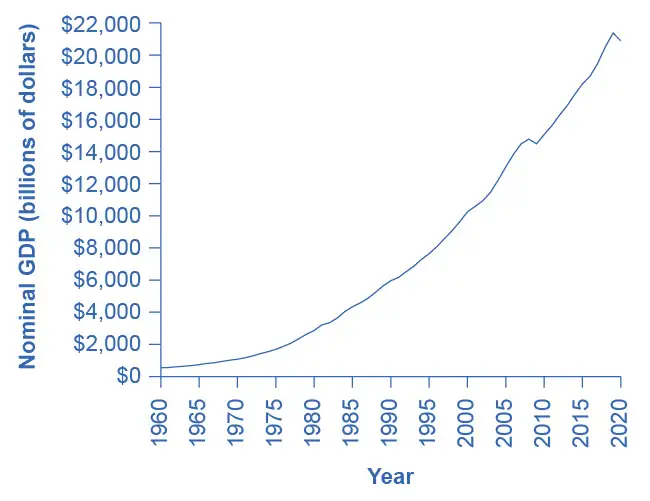
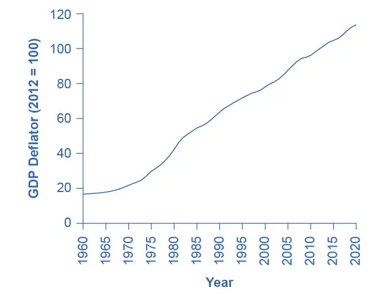
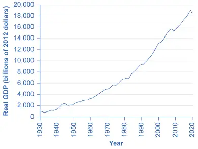

Chapter 19: The Macroeconomic Perspective¶
Introduction¶
Bring It Home: How is the Economy Doing? How Does One Tell?
The 1990s were boom years for the U.S. economy. Beginning in the late 2000s, from 2007 to 2014, economic performance in the U.S. was poor. The economy experienced another period of strong growth between 2014 and 2019, before COVID-19 rocked the world economy in March and April of 2020. What causes the economy to expand or contract? Why do businesses fail when they are making all the right decisions? Why do workers lose their jobs when they are hardworking and productive? Are bad economic times a failure of the market system? Are they a failure of the government? These are all questions of macroeconomics, which we will begin to address in this chapter. We will not be able to answer all of these questions here, but we will start with the basics: How is the economy doing? How can we tell?
The macro economy includes all buying and selling, all production and consumption; everything that goes on in every market in the economy. How can we get a handle on that? The answer begins more than 80 years ago, during the Great Depression. President Franklin D. Roosevelt and his economic advisers knew things were bad—but how could they express and measure just how bad it was? An economist named Simon Kuznets, who later won the Nobel Prize for his work, came up with a way to track what the entire economy is producing. In this chapter, you will learn how the government constructs GDP, how we use it, and why it is so important.
Chapter Outline: Introduction to the Macroeconomic Perspective
In this chapter, you will learn about:
- Measuring the Size of the Economy: Gross Domestic Product
- Adjusting Nominal Values to Real Values
- Tracking Real GDP over Time
- Comparing GDP among Countries
- How Well GDP Measures the Well-Being of Society
Macroeconomics focuses on the economy as a whole (or on whole economies as they interact). What causes recessions? What makes unemployment stay high when recessions are supposed to be over? Why do some countries grow faster than others? Why do some countries have higher standards of living than others? These are all questions that macroeconomics addresses. Macroeconomics involves adding up the economic activity of all households and all businesses in all markets to obtain the overall demand and supply in the economy. However, when we do that, something curious happens. It is not unusual that what results at the macro level is different from the sum of the microeconomic parts. What seems sensible from a microeconomic point of view can have unexpected or counterproductive results at the macroeconomic level. Imagine that you are sitting at an event with a large audience, like a live concert or a basketball game. A few people decide that they want a better view, and so they stand up. However, when these people stand up, they block the view for other people, and the others need to stand up as well if they wish to see. Eventually, nearly everyone is standing up, and as a result, no one can see much better than before. The rational decision of some individuals at the micro level—to stand up for a better view—ended up as self-defeating at the macro level. This is not macroeconomics, but it is an apt analogy.
Macroeconomics is a rather massive subject. How are we going to tackle it? Figure 19.2 illustrates the structure we will use. We will study macroeconomics from three different perspectives:
- What are the macroeconomic goals? (Macroeconomics as a discipline does not have goals, but we do have goals for the macro economy.)
- What are the frameworks economists can use to analyze the macroeconomy?
- Finally, what are the policy tools governments can use to manage the macroeconomy?

Goals¶
In thinking about the macroeconomy's overall health, it is useful to consider three primary goals: economic growth, low unemployment, and low inflation.
- Economic growth ultimately determines the prevailing standard of living in a country. Economists measure growth by the percentage change in real (inflation-adjusted) gross domestic product. A growth rate of more than 3% is considered good.
- Unemployment, as measured by the unemployment rate, is the percentage of people in the labor force who do not have a job. When people lack jobs, the economy is wasting a precious resource-labor, and the result is lower goods and services produced. Unemployment, however, is more than a statistic—it represents people’s livelihoods. While measured unemployment is unlikely to ever be zero, economists consider a measured unemployment rate of 5% or less low (good).
- Inflation is a sustained increase in the overall level of prices, and is measured by the consumer price index. If many people face a situation where the prices that they pay for food, shelter, and healthcare are rising much faster than the wages they receive for their labor, there will be widespread unhappiness as their standard of living declines. For that reason, low inflation—an inflation rate of 1–2%—is a major goal.
Frameworks¶
As you learn in the micro part of this book, principal tools that economists use are theories and models (see Welcome to Economics! for more on this). In microeconomics, we used the theories of supply and demand. In macroeconomics, we use the theories of aggregate demand (AD) and aggregate supply (AS). This book presents two perspectives on macroeconomics: the Neoclassical perspective and the Keynesian perspective, each of which has its own version of AD and AS. Between the two perspectives, you will obtain a good understanding of what drives the macroeconomy.
Policy Tools¶
National governments have two tools for influencing the macroeconomy. The first is monetary policy, which involves managing the money supply and interest rates. The second is fiscal policy, which involves changes in government spending/purchases and taxes.
We will explain each of the items in Figure 19.2 in detail in one or more other chapters. As you learn these things, you will discover that the goals and the policy tools are in the news almost every day.
19.1 Measuring the Size of the Economy: Gross Domestic Product¶
Learning Objectives
By the end of this section, you will be able to:
- Identify the components of GDP on the demand side and on the supply side
- Evaluate how economists measure gross domestic product (GDP)
- Contrast and calculate GDP, net exports, and net national product
Macroeconomics is an empirical subject, so the first step toward understanding it is to measure the economy.
How large is the U.S. economy? Economists typically measure the size of a nation’s overall economy by its gross domestic product (GDP), which is the value of all final goods and services produced within a country in a given year. Measuring GDP involves counting the production of millions of different goods and services—smart phones, cars, music downloads, computers, steel, bananas, college educations, and all other new goods and services that a country produced in the current year—and summing them into a total dollar value. This task is straightforward: take the quantity of everything produced, multiply it by the price at which each product sold, and add up the total. In 2020, the U.S. GDP totaled $20.9 trillion, the largest GDP in the world.
Each of the market transactions that enter into GDP must involve both a buyer and a seller. We can measure an economy's GDP either by the total dollar value of what consumers purchase in the economy, or by the total dollar value of what is the country produces. There is even a third way, as we will explain later.
GDP Measured by Components of Demand¶
Who buys all of this production? We can divide this demand into four main parts: consumer spending (consumption), business spending (investment), government spending on goods and services, and spending on net exports. (See the following Clear It Up feature to understand what we mean by investment.) Table 19.1 shows how these four components added up to the GDP in 2020, Figure 19.4 (a) shows the levels of consumption, investment, and government purchases over time, expressed as a percentage of GDP, while Figure 19.4 (b) shows the levels of exports and imports as a percentage of GDP over time. A few patterns about each of these components are worth noticing. Table 19.1 shows the components of GDP from the demand side.
Table 19.1 Components of U.S. GDP in 2022: From the Demand Side (Source: http://bea.gov/iTable/index_nipa.cfm, Table 1.1.5)
| Components of GDP on the Demand Side (in trillions of dollars) | Percentage of Total | |
|---|---|---|
| Consumption | $14.0 | 67.2% |
| Investment | $3.6 | 17.4% |
| Government | $3.9 | 18.5% |
| Exports | $2.1 | 10.2% |
| Imports | –$2.7 | –13.3% |
| Total GDP | $20.9 | 100% |

Clear It Up: What does the word “investment” mean?
What do economists mean by investment, or business spending? In calculating GDP, investment does not refer to purchasing stocks and bonds or trading financial assets. It refers to purchasing new capital goods, that is, new commercial real estate (such as buildings, factories, and stores) and equipment, residential housing construction, and inventories. Inventories that manufacturers produce this year are included in this year’s GDP—even if they are not yet sold. From the accountant’s perspective, it is as if the firm invested in its own inventories. Business investment in 2020 was $3.6 trillion, according to the Bureau of Economic Analysis.
![There are two graphs illustrated here. The first (a) shows three lines, representing three of the spending components of GDP: consumption, investment spending, and government spending. The y-axis measures the percentage of GDP, from 0 to 80 percent, in increments of 10 percent. The x-axis measures time, from 1965 to 2020. The line representing consumption is higher than the lines representing government spending and investment. Consumption starts at 60 percent of GDP in 1965, and is basically flat until 1985, when it increases slightly to around 65 percent, then it is roughly constant again, until it increases to near 70 percent in 2000, and stays at around that level to 2020. Government spending starts at 21 percent in 1965, and is roughly constant to 2020, decreasing very slightly to 20 percent by 2020. Investment spending starts at 19 percent in 1965, and while it has more peaks and valleys, it also does not vary much, with a low of around of 15 percent in 1975 and hitting 20 percent several times in the 1980s and the 2000s. The second graph (b) shows two lines, imports and exports as a percentage of GDP. The y-axis measures the percentage of GDP, from 0 to 20 percent, in increments of 2 percent. The x-axis measures time, from 1965 to 2020. The line representing imports is nearly always greater than the line representing exports, especially after 1985. The lines also follow each other, experiencing increases and decreases at the same time. In 1965 imports start around 4 percent of GDP, then increase steadily, to 10 percent in 1980, 14 percent in 2000, and 17 percent in 2007. They decline to 14 percent in 2009, increase to 17 percent in 2010, then steadily decline to around 14 percent in 2020. In 1965, exports start around 5 percent of GDP, then increase gradually, to around 10 percent in 1980, 11 percent in 2000, and 12 percent in 2007. They decline to 11 percent in 2009, increase to 13 percent in 2010, then steadily decline to around 10 percent in 2020.](img/cnx-econ3ev1-2-c19-04.webp)
Consumption expenditure by households is the largest component of GDP, accounting for about two-thirds of the GDP in any year. This tells us that consumers’ spending decisions are a major driver of the economy. However, consumer spending is a gentle elephant: when viewed over time, it does not jump around too much, and has increased modestly from about 60% of GDP in the 1960s and 1970s.
Investment expenditure refers to purchases of physical plant and equipment, primarily by businesses. If Starbucks builds a new store, or Amazon buys robots, they count these expenditures under business investment. Investment demand is far smaller than consumption demand, typically accounting for only about 15–18% of GDP, but it is very important for the economy because this is where jobs are created. However, it fluctuates more noticeably than consumption. Business investment is volatile. New technology or a new product can spur business investment, but then confidence can drop and business investment can pull back sharply.
If you have noticed any of the infrastructure projects (new bridges, highways, airports) launched during the 2009 recession, or if you received a stimulus check during the pandemic-induced recession of 2020–2021, you have seen how important government spending can be for the economy. Government expenditure in the United States is close to 20% of GDP, and includes spending by all three levels of government: federal, state, and local. The only part of government spending counted in demand is government purchases of goods or services produced in the economy. Examples include the government buying a new fighter jet for the Air Force (federal government spending), building a new highway (state government spending), or a new school (local government spending). A significant portion of government budgets consists of transfer payments, like unemployment benefits, veteran’s benefits, and Social Security payments to retirees. The government excludes these payments from GDP because it does not receive a new good or service in return or exchange. Instead they are transfers of income from taxpayers to others. If you are curious about the awesome undertaking of adding up GDP, read the following Clear It Up feature.
Clear It Up: How do statisticians measure GDP?
Government economists at the Bureau of Economic Analysis (BEA), within the U.S. Department of Commerce, piece together estimates of GDP from a variety of sources.
Once every five years, in the second and seventh year of each decade, the Bureau of the Census carries out a detailed census of businesses throughout the United States. In between, the Census Bureau carries out a monthly survey of retail sales. The government adjusts these figures with foreign trade data to account for exports that are produced in the United States and sold abroad and for imports that are produced abroad and sold here. Once every ten years, the Census Bureau conducts a comprehensive survey of housing and residential finance. Together, these sources provide the main basis for figuring out what is produced for consumers.
For investment, the Census Bureau carries out a monthly survey of construction and an annual survey of expenditures on physical capital equipment.
For what the federal government purchases, the statisticians rely on the U.S. Department of the Treasury. An annual Census of Governments gathers information on state and local governments. Because the government spends a considerable amount at all levels hiring people to provide services, it also tracks a large portion of spending through payroll records that state governments and the Social Security Administration collect.
With regard to foreign trade, the Census Bureau compiles a monthly record of all import and export documents. Additional surveys cover transportation and travel, and make adjustments for financial services that are produced in the United States for foreign customers.
Many other sources contribute to GDP estimates. Information on energy comes from the U.S. Department of Transportation and Department of Energy. The Agency for Health Care Research and Quality collects information on healthcare. Surveys of landlords find out about rental income. The Department of Agriculture collects statistics on farming.
All these bits and pieces of information arrive in different forms, at different time intervals. The BEA melds them together to produce GDP estimates on a quarterly basis (every three months). The BEA then "annualizes" these numbers by multiplying by four. As more information comes in, the BEA updates and revises these estimates. BEA releases the GDP “advance” estimate for a certain quarter one month after a quarter. The “preliminary” estimate comes out one month after that. The BEA publishes the “final” estimate one month later, but it is not actually final. In July, the BEA releases roughly updated estimates for the previous calendar year. Then, once every five years, after it has processed all the results of the latest detailed five-year business census, the BEA revises all of the past GDP estimates according to the newest methods and data, going all the way back to 1929.
Link It Up
Visit this website to read FAQs on the BEA site. You can even email your own questions!
When thinking about the demand for domestically produced goods in a global economy, it is important to count spending on exports—domestically produced goods that a country sells abroad. Similarly, we must also subtract spending on imports—goods that a country produces in other countries that residents of this country purchase. The GDP net export component is equal to the dollar value of exports (X) minus the dollar value of imports (M), (X – M). We call the gap between exports and imports the trade balance. If a country’s exports are larger than its imports, then a country has a trade surplus. In the United States, exports typically exceeded imports in the 1960s and 1970s, as Figure 19.4(b) shows.
Since the early 1980s, imports have typically exceeded exports, and so the United States has experienced a trade deficit in most years. The trade deficit grew quite large in the late 1990s and in the mid-2000s. Figure 19.4 (b) also shows that imports and exports have both risen substantially in recent decades, even after the declines during the Great Recession between 2008 and 2009. As we noted before, if exports and imports are equal, foreign trade has no effect on total GDP. However, even if exports and imports are balanced overall, foreign trade might still have powerful effects on particular industries and workers by causing nations to shift workers and physical capital investment toward one industry rather than another.
Based on these four components of demand, we can measure GDP as:
Understanding how to measure GDP is important for analyzing connections in the macro economy and for thinking about macroeconomic policy tools.
GDP Measured by What is Produced¶
Everything that we purchase somebody must first produce. Table 19.2 breaks down what a country produces into five categories: durable goods, nondurable goods, services, structures, and the change in inventories. Before going into detail about these categories, notice that total GDP measured according to what is produced is exactly the same as the GDP measured by looking at the five components of demand. Figure 19.5 provides a visual representation of this information.
Table 19.2 Components of U.S. GDP on the Production Side, 2020 (Source: http://bea.gov/iTable/index_nipa.cfm, Table 1.2.5)
| Components of GDP on the Supply Side (in trillions of dollars) | Percentage of Total | |
|---|---|---|
| Goods | ||
| Durable goods | $3.5 | 16.7% |
| Nondurable goods | $2.8 | 13.4% |
| Services | $12.7 | 60.8% |
| Structures | $1.9 | 9.1% |
| Change in inventories | $0.0 | 0.0% |
| Total GDP | $20.9 | 100% |

Since every market transaction must have both a buyer and a seller, GDP must be the same whether measured by what is demanded or by what is produced. Figure 19.6 shows these components of what is produced, expressed as a percentage of GDP, since 1950.
![This graph illustrates four lines, each representing a component of GDP on the production side. There is a line for services, durable goods, non-durable goods, and structures. The y-axis measures percentage of GDP, from 0 to 65 percent, in 5 percent increments. The x-axis shows years, from 1970 to 2020. The line for services is above the other three. In 1965 services is around 49 percent of GDP, and increases over time to around 65 percent in 2010, declining slightly to 60 percent in 2020. Durable goods is 20 percent in 1965, and is relatively constant until 2020. Non-durable goods starts at 21 percent in 1965, then slowly declines to 15 percent in 2020. In 1965 structures are 10 percent of GDP, and is relatively flat until 2008, when it declines to 7 percent in 2010, then it increases to 10 percent in 2020.](img/cnx-econ3ev1-2-c19-06.webp)
In thinking about what is produced in the economy, many non-economists immediately focus on solid, long-lasting goods, like cars and computers. By far the largest part of GDP, however, is services. Moreover, services have been a growing share of GDP over time. A detailed breakdown of the leading service industries would include healthcare, education, and legal and financial services. It has been decades since most of the U.S. economy involved making solid objects. Instead, the most common jobs in a modern economy involve a worker looking at pieces of paper or a computer screen; meeting with co-workers, customers, or suppliers; or making phone calls.
Even within the overall category of goods, long-lasting durable goods like cars and refrigerators are about the same share of the economy as short-lived nondurable goods like food and clothing. The category of structures includes everything from homes, to office buildings, shopping malls, and factories. Inventories is a small category that refers to the goods that one business has produced but has not yet sold to consumers, and are still sitting in warehouses and on shelves. The amount of inventories sitting on shelves tends to decline if business is better than expected, or to rise if business is worse than expected.
Another Way to Measure GDP: The National Income Approach¶
GDP is a measure of what is produced in a nation. The primary way GDP is estimated is with the Expenditure Approach we discussed above, but there is another way. Everything a firm produces, when sold, becomes revenues to the firm. Businesses use revenues to pay their bills: Wages and salaries for labor, interest and dividends for capital, rent for land, profit to the entrepreneur, etc. So adding up all the income produced in a year provides a second way of measuring GDP. This is why the terms GDP and national income are sometimes used interchangeably. The total value of a nation’s output is equal to the total value of a nation’s income.
The Problem of Double Counting¶
We define GDP as the current value of all final goods and services produced in a nation in a year. What are final goods? They are goods at the furthest stage of production at the end of a year. Statisticians who calculate GDP must avoid the mistake of double counting, in which they count output more than once as it travels through the production stages. For example, imagine what would happen if government statisticians first counted the value of tires that a tire manufacturer produces, and then counted the value of a new truck that an automaker sold that contains those tires. In this example, the statisticians would have counted the value of the tires twice-because the truck's price includes the value of the tires.
To avoid this problem, which would overstate the size of the economy considerably, government statisticians count just the value of final goods and services in the chain of production that are sold for consumption, investment, government, and trade purposes. Statisticians exclude intermediate goods, which are goods that go into producing other goods, from GDP calculations. From the example above, they will only count the Ford truck's value. The value of what businesses provide to other businesses is captured in the final products at the end of the production chain.
The concept of GDP is fairly straightforward: it is just the dollar value of all final goods and services produced in the economy in a year. In our decentralized, market-oriented economy, actually calculating the more than $21 trillion-dollar U.S. GDP—along with how it is changing every few months—is a full-time job for a brigade of government statisticians.
Table 19.3 Counting GDP
| What is Counted in GDP | What is not included in GDP |
|---|---|
| Consumption | Intermediate goods |
| Business investment | Transfer payments and non-market activities |
| Government spending on goods and services | Used goods |
| Net exports | Illegal goods |
Notice the items that are not counted into GDP, as Table 19.3 outlines. The sales of used goods are not included because they were produced in a previous year and are part of that year’s GDP. The entire underground economy of services paid “under the table” and illegal sales should be counted, but is not, because it is impossible to track these sales. In Friedrich Schneider's recent study of shadow economies, he estimated the underground economy in the United States to be 6.6% of GDP, or close to $2 trillion dollars in 2013 alone. Transfer payments, such as payment by the government to individuals, are not included, because they do not represent production. Also, production of some goods—such as home production as when you make your breakfast—is not counted because these goods are not sold in the marketplace.
Link It Up
Visit this website to read about the “New Underground Economy.”
Other Ways to Measure the Economy¶
Besides GDP, there are several different but closely related ways of measuring the size of the economy. We mentioned above that we can think of GDP as total production and as total purchases. We can also think of it as total income since anything one produces and sells yields income.
One of the closest cousins of GDP is the gross national product (GNP). GDP includes only what country produces within its borders. GNP adds what domestic businesses and labor abroad produces, and subtracts any payments that foreign labor and businesses located in the United States send home to other countries. In other words, GNP is based more on what a country's citizens and firms produce, wherever they are located, and GDP is based on what happens within a certain county's geographic boundaries. For the United States, the gap between GDP and GNP is relatively small; in recent years, only about 0.2%. For small nations, which may have a substantial share of their population working abroad and sending money back home, the difference can be substantial.
We calculate net national product (NNP) by taking GNP and then subtracting the value of how much physical capital is worn out, or reduced in value because of aging, over the course of a year. The process by which capital ages and loses value is called depreciation. We can further subdivide NNP into national income, which includes all income to businesses and individuals, and personal income, which includes only income to people.
The gross national income (GNI) includes the value of all goods and services produced by people from a country—whether in the country or not. Unlike the other methods, GNI essentially measures the wealth of a nation because it focuses on income, not output. As you will see in the discussion regarding global economic diversity, the World Bank now uses GNI to classify nations according to economic status.
For practical purposes, it is not vital to memorize these definitions. However, it is important to be aware that these differences exist and to know what statistic you are examining, so that you do not accidentally compare, say, GDP in one year or for one country with GNP or NNP in another year or another country. To get an idea of how these calculations work, follow the steps in the following Work It Out feature.
Work It Out: Calculating GDP, Net Exports, and NNP
Based on the information in Table 19.4:
- What is the value of GDP?
- What is the value of net exports?
- What is the value of NNP?
Table 19.4
| Government purchases | $120 billion |
| Depreciation | $40 billion |
| Consumption | $400 billion |
| Business Investment | $60 billion |
| Exports | $100 billion |
| Imports | $120 billion |
| Income receipts from rest of the world | $10 billion |
| Income payments to rest of the world | $8 billion |
Step 1. To calculate GDP use the following formula:
Step 2. To calculate net exports, subtract imports from exports.
Step 3. To calculate NNP, use the following formula:
19.2 Adjusting Nominal Values to Real Values¶
Learning Objectives
By the end of this section, you will be able to:
- Contrast nominal GDP and real GDP
- Explain GDP deflator
- Calculate real GDP based on nominal GDP values
When examining economic statistics, there is a crucial distinction worth emphasizing. The distinction is between nominal and real measurements, which refer to whether or not inflation has distorted a given statistic. Looking at economic statistics without considering inflation is like looking through a pair of binoculars and trying to guess how close something is: unless you know how strong the lenses are, you cannot guess the distance very accurately. Similarly, if you do not know the inflation rate, it is difficult to figure out if a rise in GDP is due mainly to a rise in the overall level of prices or to a rise in quantities of goods produced. The nominal value of any economic statistic means that we measure the statistic in terms of actual prices that exist at the time. The real value refers to the same statistic after it has been adjusted for inflation. Generally, it is the real value that is more important.
Converting Nominal to Real GDP¶
Table 19.5 shows U.S. GDP at five-year intervals since 1960 in nominal dollars; that is, GDP measured using the actual market prices prevailing in each stated year. Figure 19.7 also reflects this data in a graph.
Table 19.5 U.S. Nominal GDP and the GDP Deflator (Source: https://apps.bea.gov/itable/index.cfm, Table 1.1.5 and Table 1.1.9)
| Year | Nominal GDP (billions of dollars) | GDP Deflator (2012 = 100) |
|---|---|---|
| 1960 | 542.4 | 16.6 |
| 1965 | 742.3 | 17.8 |
| 1970 | 1,073.3 | 21.7 |
| 1975 | 1,684.9 | 29.8 |
| 1980 | 2,857.3 | 42.2 |
| 1985 | 4,339.0 | 54.5 |
| 1990 | 5,963.1 | 63.6 |
| 1995 | 7,639.7 | 71.8 |
| 2000 | 10,251.0 | 78.0 |
| 2005 | 13,039.2 | 87.5 |
| 2010 | 15,049.0 | 96.2 |
| 2015 | 18,206.0 | 104.7 |
| 2020 | 20,893.7 | 113.6 |

If an unwary analyst compared nominal GDP in 1960 to nominal GDP in 2010, it might appear that national output had risen by a factor of more than 38 over this time (that is, GDP of $20.9 trillion in 2020 divided by GDP of $543 billion in 1960 = 38). This conclusion would be highly misleading. Recall that we define nominal GDP as the quantity of every final good or service produced multiplied by the price at which it was sold, summed up for all goods and services. In order to see how much production has actually increased, we need to extract the effects of higher prices on nominal GDP. We can easily accomplish this using the GDP deflator.
The GDP deflator is a price index measuring the average prices of all final goods and services included in the economy. We explore price indices in detail and how we compute them in Inflation, but this definition will do in the context of this chapter. Table 19.5 provides the GDP deflator data and Figure 19.8 shows it graphically.

Figure 19.8 shows that the price level has risen dramatically since 1960. The price level in 2020 was seven times higher than in 1960 (the deflator for 2020 was 113 versus a level of 17 in 1960). Clearly, much of the growth in nominal GDP was due to inflation, not an actual change in the quantity of goods and services produced, in other words, not in real GDP. Recall that nominal GDP can rise for two reasons: an increase in output, and/or an increase in prices. What is needed is to extract the increase in prices from nominal GDP so as to measure only changes in output. After all, the dollars used to measure nominal GDP in 1960 are worth more than the inflated dollars of 2020—and the price index tells exactly how much more. This adjustment is easy to do if you understand that nominal measurements are in value terms, where
Let’s look at an example at the micro level. Suppose the t-shirt company, Coolshirts, sells 10 t-shirts at a price of $9 each.
Then,
In other words, when we compute “real” measurements we are trying to obtain actual quantities, in this case, 10 t-shirts.
With GDP, it is just a tiny bit more complicated. We start with the same formula as above:
For reasons that we will explain in more detail below, mathematically, a price index is a two-digit decimal number like 1.00 or 0.85 or 1.25. Because some people have trouble working with decimals, when the price index is published, it has traditionally been multiplied by 100 to get integer numbers like 100, 85, or 125. What this means is that when we “deflate” nominal figures to get real figures (by dividing the nominal by the price index). We also need to remember to divide the published price index by 100 to make the math work. Thus, the formula becomes:
Now read the following Work It Out feature for more practice calculating real GDP.
Work It Out: Computing GDP
It is possible to use the data in Table 19.5 to compute real GDP.
Step 1. Look at Table 19.5, to see that, in 1960, nominal GDP was $543.3 billion and the price index (GDP deflator) was 19.0.
Step 2. To calculate the real GDP in 1960, use the formula:
We’ll do this in two parts to make it clear. First adjust the price index: 19 divided by 100 = 0.19. Then divide into nominal GDP: $543.3 billion / 0.19 = $2,859.5 billion.
Step 3. Use the same formula to calculate the real GDP in 1965.
Step 4. Continue using this formula to calculate all of the real GDP values from 1960 through 2010. The calculations and the results are in Table 19.6.
Table 19.6 Converting Nominal to Real GDP (Source: Bureau of Economic Analysis, www.bea.gov)
| Year | Nominal GDP (billions of dollars) | GDP Deflator (2012 = 100) | Calculations | Real GDP (billions of 2012 dollars) |
|---|---|---|---|---|
| 1960 | 542.4 | 16.6 | 542.4 / (16.6/100) | 3267.5 |
| 1965 | 742.3 | 17.8 | 742.3 / (17.8/100) | 4170.2 |
| 1970 | 1073.3 | 21.7 | 1,073.3 / (21.7/100) | 4946.1 |
| 1975 | 1684.9 | 29.8 | 1,684.9 / (29.8/100) | 5654.0 |
| 1980 | 2857.3 | 42.2 | 2,857.3 / (42.2/100) | 6770.9 |
| 1985 | 4339.0 | 54.5 | 4,339.0 / (54.5/100) | 7961.5 |
| 1990 | 5963.1 | 63.6 | 5,963.1 / (63.6/100) | 9375.9 |
| 1995 | 7639.7 | 71.8 | 7,639.7/ (71.8/100) | 10640.3 |
| 2000 | 10251.0 | 78.0 | 10,251.0 / (78.0/100) | 13142.3 |
| 2005 | 13039.2 | 87.5 | 13,039.2 / (87.5/100) | 14901.9 |
| 2010 | 15049.0 | 96.2 | 15,049.0 / (96.2/100) | 15643.5 |
| 2012 | 16254.0 | 100.0 | 16,254.0 / (100.0/100) | 16254.0 |
| 2015 | 18206.0 | 104.7 | 18,206.0 / (104.7/100) | 17388.7 |
| 2020 | 20893.7 | 113.6 | 20,893.7 / (113.6/100) | 18392.3 |
There are a couple things to notice here. Whenever you compute a real statistic, one year (or period) plays a special role. It is called the base year (or base period). The base year is the year whose prices we use to compute the real statistic. When we calculate real GDP, for example, we take the quantities of goods and services produced in each year (for example, 1960 or 1973) and multiply them by their prices in the base year (in this case, 2005), so we get a measure of GDP that uses prices that do not change from year to year. That is why real GDP is labeled “Constant Dollars” or, in this example, “2012 Dollars,” which means that real GDP is constructed using prices that existed in 2005. While the example here uses 2012 as the base year, more generally, you can use any year as the base year. The formula is:
Rearranging the formula and using the data from 2012:
Comparing real GDP and nominal GDP for 2012, you see they are the same. This is no accident. It is because we have chosen 2012 as the “base year” in this example. Since the price index in the base year always has a value of 100 (by definition), nominal and real GDP are always the same in the base year.
Look at the data for 2015.
Use this data to make another observation: As long as inflation is positive, meaning prices increase on average from year to year, real GDP should be less than nominal GDP in any year after the base year. The reason for this should be clear: The value of nominal GDP is “inflated” by inflation. Similarly, as long as inflation is positive, real GDP should be greater than nominal GDP in any year before the base year.
Figure 19.9 shows the U.S. nominal and real GDP since 1960. Because 2005 is the base year, the nominal and real values are exactly the same in that year. However, over time, the rise in nominal GDP looks much larger than the rise in real GDP (that is, the nominal GDP line rises more steeply than the real GDP line), because the presence of inflation, especially in the 1970s exaggerates the rise in nominal GDP.
![This graph illustrates two lines: nominal GDP over time and real GDP over time. The y-axis measures GDP in billions of dollars, in 2,000 dollar increments, from 0 to 22,000 dollars (22,000 billion is 22 trillion dollars). The x-axis shows years, from 1970 to 2020. Real GDP in 1970 is approximately 5,000 billion, or 5 trillion dollars, and nominal GDP is roughly 1,000 billion dollars, or 1 trillion dollars. From 1970 to 2011, Real GDP is above nominal GDP. Both lines increase over time and they intersect in 2012, the base year of the GDP Deflator, and from there nominal GDP is greater than real GDP. In 2021, nominal GDP is roughly 21,000 billion dollars, or 21 trillion dollars, and real GDP is roughly 18,000 billion dollars, or 18 trillion dollars.](img/cnx-econ3e-c19-013.webp)
Let’s return to the question that we posed originally: How much did GDP increase in real terms? What was the real GDP growth rate from 1960 to 2020? To find the real growth rate, we apply the formula for percentage change:
In other words, the U.S. economy has increased real production of goods and services by nearly a factor of five since 1960. Of course, that understates the material improvement since it fails to capture improvements in the quality of products and the invention of new products.
There is a quicker way to answer this question approximately, using another math trick. Because:
Therefore, real GDP growth rate (% change in quantity) equals the growth rate in nominal GDP (% change in value) minus the inflation rate (% change in price).
Note that using this equation provides an approximation for small changes in the levels. For more accurate measures, one should use the first formula.
19.3 Tracking Real GDP over Time¶
Learning Objectives
By the end of this section, you will be able to:
- Explain recessions, depressions, peaks, and troughs
- Evaluate the importance of tracking real GDP over time
When news reports indicate that “the economy grew 1.2% in the first quarter,” the reports are referring to the percentage change in real GDP. By convention, governments report GDP growth at an annualized rate: Whatever the calculated growth in real GDP was for the quarter, we multiply it by four when it is reported as if the economy were growing at that rate for a full year.

Figure 19.10 shows the pattern of U.S. real GDP since 1930. Short term declines have regularly interrupted the generally upward long-term path of GDP. We call a significant decline in real GDP a recession. We call an especially lengthy and deep recession a depression. The severe drop in GDP that occurred during the 1930s Great Depression is clearly visible in the figure, as is the 2008–2009 Great Recession and the recession induced by COVID-19 in 2020.
Real GDP is important because it is highly correlated with other measures of economic activity, like employment and unemployment. When real GDP rises, so does employment.
The most significant human problem associated with recessions (and their larger, uglier cousins, depressions) is that a slowdown in production means that firms need to lay off or fire some of their workers. Losing a job imposes painful financial and personal costs on workers, and often on their extended families as well. In addition, even those who keep their jobs are likely to find that wage raises are scanty at best—or their employers may ask them to take pay cuts.
Table 19.7 lists the pattern of recessions and expansions in the U.S. economy since 1900. We call the highest point of the economy, before the recession begins, the peak. Conversely, the lowest point of a recession, before a recovery begins, is the trough. Thus, a recession lasts from peak to trough, and an economic upswing runs from trough to peak. We call the economy's movement from peak to trough and trough to peak the business cycle. It is intriguing to notice that the three longest trough-to-peak expansions of the twentieth century have happened since 1960. The most recent recession was caused by the COVID-19 pandemic. It started in February 2020 and ended formally in May 2020. This was the most severe recession since the 1930s Great Depression, but also the shortest. The previous recession, called the Great Recession, was also very severe and lasted about 18 months. The expansion starting in June 2009, the trough from the Great Recession, was the longest on record—ending 128 months with the pandemic-induced recession.
Table 19.7 U.S. Business Cycles since 1900 (Source: http://www.nber.org/cycles/main.html)
| Trough | Peak | Months of Contraction | Months of Expansion |
|---|---|---|---|
| December 1900 | September 1902 | 18 | 21 |
| August 1904 | May 1907 | 23 | 33 |
| June 1908 | January 1910 | 13 | 19 |
| January 1912 | January 1913 | 24 | 12 |
| December 1914 | August 1918 | 23 | 44 |
| March 1919 | January 1920 | 7 | 10 |
| July 1921 | May 1923 | 18 | 22 |
| July 1924 | October 1926 | 14 | 27 |
| November 1927 | August 1929 | 23 | 21 |
| March 1933 | May 1937 | 43 | 50 |
| June 1938 | February 1945 | 13 | 80 |
| October 1945 | November 1948 | 8 | 37 |
| October 1949 | July 1953 | 11 | 45 |
| May 1954 | August 1957 | 10 | 39 |
| April 1958 | April 1960 | 8 | 24 |
| February 1961 | December 1969 | 10 | 106 |
| November 1970 | November 1973 | 11 | 36 |
| March 1975 | January 1980 | 16 | 58 |
| July 1980 | July 1981 | 6 | 12 |
| November 1982 | July 1990 | 16 | 92 |
| March 1991 | March 2001 | 8 | 120 |
| November 2001 | December 2007 | 8 | 73 |
| January 2009 | February 2020 | 2 | 128 |
| April 2020 | TBD | TBD | TBD |
A private think tank, the National Bureau of Economic Research (NBER), tracks business cycles for the U.S. economy. However, the effects of a severe recession often linger after the official ending date assigned by the NBER.
19.4 Comparing GDP among Countries¶
Learning Objectives
By the end of this section, you will be able to:
- Explain how we can use GDP to compare the economic welfare of different nations
- Calculate the conversion of GDP to a common currency by using exchange rates
- Calculate GDP per capita using population data
It is common to use GDP as a measure of economic welfare or standard of living in a nation. When comparing the GDP of different nations for this purpose, two issues immediately arise. First, we measure a country's GDP in its own currency: the United States uses the U.S. dollar; Canada, the Canadian dollar; most countries of Western Europe, the euro; Japan, the yen; Mexico, the peso; and so on. Thus, comparing GDP between two countries requires converting to a common currency. A second issue is that countries have very different numbers of people. For instance, the United States has a much larger economy than Mexico or Canada, but it also has almost three times as many people as Mexico and nine times as many people as Canada. Thus, if we are trying to compare standards of living across countries, we need to divide GDP by population.
Converting Currencies with Exchange Rates¶
To compare the GDP of countries with different currencies, it is necessary to convert to a “common denominator” using an exchange rate, which is the value of one currency in terms of another currency. We express exchange rates either as the units of country A’s currency that need to be traded for a single unit of country B’s currency (for example, Japanese yen per British pound), or as the inverse (for example, British pounds per Japanese yen). We can use two types of exchange rates for this purpose, market exchange rates and purchasing power parity (PPP) equivalent exchange rates. Market exchange rates vary on a day-to-day basis depending on supply and demand in foreign exchange markets. PPP-equivalent exchange rates provide a longer run measure of the exchange rate. For this reason, economists typically use PPP-equivalent exchange rates for GDP cross country comparisons. We will discuss exchange rates in more detail in Exchange Rates and International Capital Flows. The following Work It Out feature explains how to convert GDP to a common currency.
Work It Out: Converting GDP to a Common Currency
Using the exchange rate to convert GDP from one currency to another is straightforward. Say that the task is to compare Brazil’s GDP in 2020 of 7.4 trillion reals with the U.S. GDP of $20.9 trillion for the same year.
Step 1. Determine the exchange rate for the specified year. In 2020, the exchange rate was 2.362 reals = $1. (These numbers are realistic, but rounded off to simplify the calculations.)
Step 2. Convert Brazil’s GDP into U.S. dollars:
Step 3. Compare this value to the GDP in the United States in the same year. The U.S. GDP was $20.9 trillion in 2020, which is almost seven times that of GDP in Brazil.
Step 4. View Table 19.8 which shows the size of and variety of GDPs of different countries in 2020, all expressed in U.S. dollars. We calculate each using the process that we explained above.
Table 19.8 Comparing GDPs Across Countries, 2020 (Source: https://data.worldbank.org/indicator/NY.GDP.MKTP.CN.AD)
| Country | GDP in Billions of Domestic Currency | Domestic Currency/U.S. Dollars (PPP Equivalent) | GDP (in billions of U.S. dollars) | |
|---|---|---|---|---|
| Brazil | 7,447.86 | reals | 2.362 | 3,153.60 |
| Canada | 2,204.91 | dollars | 1.206 | 1,827.70 |
| China | 101,598.62 | yuan | 4.186 | 24,273.31 |
| Egypt | 5,820.00 | pounds | 4.511 | 1,290.21 |
| Germany | 3,367.56 | euros | 0.746 | 4,516.93 |
| India | 195,861.61 | rupees | 21.990 | 8,907.02 |
| Japan | 531,247.88 | yen | 102.835 | 5,166.00 |
| Mexico | 23,122.02 | pesos | 9.522 | 2,428.20 |
| South Korea | 1,924,452.90 | won | 861.824 | 2,233.00 |
| United Kingdom | 2,112.04 | pounds | 0.700 | 3,019.06 |
| United States | 20,936.60 | dollars | 1.000 | 20,936.60 |
GDP Per Capita¶
The U.S. economy has the largest GDP in the world, by a considerable amount. The United States is also a populous country; in fact, it is the third largest country by population in the world, although well behind China and India. Is the U.S. economy larger than other countries just because the United States has more people than most other countries, or because the U.S. economy is actually larger on a per-person basis? We can answer this question by calculating a country’s GDP per capita; that is, the GDP divided by the population.
The second column of Table 19.9 lists the GDP of the same selection of countries that appeared in the previous Tracking Real GDP over Time and Table 19.8, showing their GDP as converted into U.S. dollars (which is the same as the last column of the previous table). The third column gives the population for each country. The fourth column lists the GDP per capita. We obtain GDP per capita in two steps: First, by multiplying column two (GDP, in billions of dollars) by 1000 so it has the same units as column three (Population, in millions). Then divide the result (GDP in millions of dollars) by column three (Population, in millions).
Table 19.9 GDP Per Capita, 2020 (Source: https://data.worldbank.org/indicator/NY.GDP.MKTP.CD)
| Country | GDP (in billions of U.S. dollars) | Population (in millions) | Per Capita GDP (in U.S. dollars) |
|---|---|---|---|
| Brazil | 3,153.60 | 212.56 | 14,836.27 |
| Canada | 1,827.71 | 38.00 | 48,097.62 |
| China | 24,273.36 | 1,402.11 | 17,312.02 |
| Egypt | 1,290.21 | 102.33 | 12,608.30 |
| Germany | 4,516.94 | 83.24 | 54,263.99 |
| India | 8,907.03 | 1,380.00 | 6,454.37 |
| Japan | 5,166.00 | 125.84 | 41,052.13 |
| Mexico | 2,428.20 | 128.93 | 18,833.48 |
| South Korea | 2,233.00 | 51.78 | 43,124.78 |
| United Kingdom | 3,019.60 | 67.22 | 44,913.08 |
| United States | 20,936.60 | 329.48 | 63,544.37 |
Notice that the rankings by GDP in billions of U.S. dollars, and by GDP per capita, are different than the ranking of GDP by each country’s currency. Measured by its own currency, the rupee, India has a somewhat larger GDP than Germany. On a per capita basis in U.S. dollars, Germany has more than 9 times India’s per capita GDP on PPP terms.
Clear It Up: Is China going to surpass the United States in terms of standard of living?
China has the largest GDP in PPP terms: $24 trillion compared to the United States’ $21 trillion. But China has a much larger population so that in per capita terms, its GDP is less than one fourth that of the United States ($17,000 compared to $63,000). The Chinese people are still quite poor relative to the United States and other developed countries. One caveat: For reasons we will discuss shortly, GDP per capita can give us only a rough idea of the differences in living standards across countries.
The world’s high-income nations—including the United States, Canada, the Western European countries, and Japan—typically have GDP per capita in the range of $20,000 to $50,000. Middle-income countries, which include much of Latin America, Eastern Europe, and some countries in East Asia, have GDP per capita in the range of $6,000 to $12,000. The world's low-income countries, many of them located in Africa and Asia, often have GDP per capita of less than $2,000 per year.
19.5 How Well GDP Measures the Well-Being of Society¶
Learning Objectives
By the end of this section, you will be able to:
- Discuss how productivity influences the standard of living
- Explain the limitations of GDP as a measure of the standard of living
- Analyze the relationship between GDP data and fluctuations in the standard of living
The level of GDP per capita clearly captures some of what we mean by the phrase “standard of living.” Most of the migration in the world, for example, involves people who are moving from countries with relatively low GDP per capita to countries with relatively high GDP per capita.
“Standard of living” is a broader term than GDP. While GDP focuses on production that is bought and sold in markets, standard of living includes all elements that affect people’s well-being, whether they are bought and sold in the market or not. To illuminate the difference between GDP and standard of living, it is useful to spell out some things that GDP does not cover that are clearly relevant to standard of living.
Limitations of GDP as a Measure of the Standard of Living¶
GDP measures economic activity, not all activity. As a result, economists like Kate Raworth see it as a somewhat outdated and limited indication of well-being and prosperity. While GDP measures output of work done at home, as well as spending on travel, it doesn't capture unpaid work or leisure time. So, two countries may have equal GDP, but one nation's workers may have an average workday of eight hours, while the other has an average workday of twelve hours. In that case, is their equal GDP truly measuring the prosperity of those nations? The GDP per capita of the U.S. economy is larger than the GDP per capita of Germany, as Table 19.9 showed, but does that prove that the standard of living in the United States is higher? Not necessarily, since it is also true that the average U.S. worker works several hundred hours more per year more than the average German worker. Calculating GDP does not account for the German worker’s extra vacation weeks.
While GDP includes what a country spends on environmental protection, healthcare, and education, it does not include actual levels of environmental cleanliness, health, and learning. GDP includes the cost of buying pollution-control equipment, but it does not address whether the air and water are actually cleaner or dirtier. GDP includes spending on medical care, but does not address whether life expectancy or infant mortality have risen or fallen. Similarly, it counts spending on education, but does not address directly how much of the population can read, write, or do basic mathematics.
GDP includes production that is exchanged in the market, but it does not cover production that is not exchanged in the market. For example, hiring someone to mow your lawn or clean your house is part of GDP, but doing these tasks yourself is not part of GDP. One remarkable change in the U.S. economy in recent decades is the growth in women’s participation in the labor force. As of 1970, only about 42% of women participated in the paid labor force. By the second decade of the 2000s, nearly 60% of women participated in the paid labor force according to the Bureau of Labor Statistics. As women are now in the labor force, many of the services they used to produce in the non-market economy like food preparation and child care have shifted to some extent into the market economy, which makes the GDP appear larger even if people actually are not consuming more services. However, as Raworth points out and was explored in the chapter on the labor market, even women who are fully employed expend significant effort (generally more than men) in raising children and maintaining a home. Raworth advocates that economic measures include monetized and un-monetized goods and services, so that the status and contributors to each economy are more accurate.
GDP has nothing to say about the level of inequality in society. GDP per capita is only an average. When GDP per capita rises by 5%, it could mean that GDP for everyone in the society has risen by 5%, or that GDP of some groups has risen by more while that of others has risen by less—or even declined. GDP also has nothing in particular to say about the amount of variety available. If a family buys 100 loaves of bread in a year, GDP does not care whether they are all white bread, or whether the family can choose from wheat, rye, pumpernickel, and many others—it just looks at the total amount the family spends on bread.
Likewise, GDP has nothing much to say about what technology and products are available. The standard of living in, for example, 1950 or 1900 was not affected only by how much money people had—it was also affected by what they could buy. No matter how much money you had in 1950, you could not buy an iPhone or a personal computer.
In certain cases, it is not clear that a rise in GDP is even a good thing. If a city is wrecked by a hurricane, and then experiences a surge of rebuilding construction activity, it would be peculiar to claim that the hurricane was therefore economically beneficial. If people are led by a rising fear of crime, to pay for installing bars and burglar alarms on all their windows, it is hard to believe that this increase in GDP has made them better off. Similarly, some people would argue that sales of certain goods, like pornography or extremely violent movies, do not represent a gain to society’s standard of living.
Does a Rise in GDP Overstate or Understate the Rise in the Standard of Living?¶
The fact that GDP per capita does not fully capture the broader idea of standard of living has led to a concern that the increases in GDP over time are illusory. It is theoretically possible that while GDP is rising, the standard of living could be falling if human health, environmental cleanliness, and other factors that are not included in GDP are worsening. Fortunately, this fear appears to be overstated.
In some ways, the rise in GDP understates the actual rise in the standard of living. For example, the typical workweek for a U.S. worker has fallen over the last century from about 60 hours per week to less than 40 hours per week. Life expectancy and health have risen dramatically, and so has the average level of education. Since 1970, the air and water in the United States have generally been getting cleaner. Companies have developed new technologies for entertainment, travel, information, and health. A much wider variety of basic products like food and clothing is available today than several decades ago. Because GDP does not capture leisure, health, a cleaner environment, the possibilities that new technology creates, or an increase in variety, the actual rise in the standard of living for Americans in recent decades has exceeded the rise in GDP.
On the other side, crime rates, traffic congestion levels, and income inequality are higher in the United States now than they were in the 1960s. Moreover, a substantial number of services that women primarily provided in the non-market economy are now part of the market economy that GDP counts. By ignoring these factors, GDP would tend to overstate the true rise in the standard of living.
Link It Up
Visit this website to read about the American Dream and standards of living.
GDP is Rough, but Useful¶
A high level of GDP should not be the only goal of macroeconomic policy, or government policy more broadly. Even though GDP does not measure the broader standard of living with any precision, it does measure production well and it does indicate when a country is materially better or worse off in terms of jobs and incomes. In most countries, a significantly higher GDP per capita occurs hand in hand with other improvements in everyday life along many dimensions, like education, health, and environmental protection.
No single number can capture all the elements of a term as broad as “standard of living.” Nonetheless, GDP per capita is a reasonable, rough-and-ready measure of the standard of living.
Bring It Home: How is the Economy Doing? How Does One Tell?
To determine the state of the economy, one needs to examine economic indicators, such as GDP. To calculate GDP is quite an undertaking. It is the broadest measure of a nation’s economic activity and we owe a debt to Simon Kuznets, the creator of the measurement, for that.
The sheer size of the U.S. economy as measured by nominal GDP is huge—as of the third quarter of 2021, $23.2 trillion worth of goods and services were produced annually. During the COVID-19-induced recession, which lasted just two months according to NBER and was concentrated across Quarters 1 and 2 of 2020, real GDP dropped 9%—much larger and quicker of a drop than during the previous economic downturn, the Great Recession (2007–2009). The economy quickly bounced back, and as of Quarter 1 of 2021, real GDP had slightly surpassed the level it was at prior to the start of the pandemic. These statistics show the severity of the pandemic-induced recession, and while real GDP fully recovered, there are other ways in which the economy has not. While GDP and GDP per capita give us a rough estimate of a nation's standard of living, there are many other ways to track the health of the economy. This chapter is the building block for other chapters that explore more economic indicators such as unemployment, inflation, or interest rates, and perhaps more importantly, will explain how they are related and what causes them to rise or fall.
Chapter Review¶
Key Terms¶
- business cycle
- the economy's relatively short-term movement in and out of recession
- depreciation
- the process by which capital ages over time and therefore loses its value
- depression
- an especially lengthy and deep decline in output
- double counting
- a potential mistake to avoid in measuring GDP, in which output is counted more than once as it travels through the stages of production
- durable good
- long-lasting good like a car or a refrigerator
- exchange rate
- the price of one currency in terms of another currency
- final good and service
- output used directly for consumption, investment, government, and trade purposes; contrast with “intermediate good”
- GDP per capita
- GDP divided by the population
- gross domestic product (GDP)
- the value of the output of all final goods and services produced within a country in a year
- gross national product (GNP)
- includes what is produced domestically and what is produced by domestic labor and business abroad in a year
- intermediate good
- output provided to other businesses at an intermediate stage of production, not for final users; contrast with “final good and service”
- inventory
- good that has been produced, but not yet been sold
- national income
- includes all income earned: wages, profits, rent, and profit income
- net national product (NNP)
- GNP minus depreciation
- nominal value
- the economic statistic actually announced at that time, not adjusted for inflation; contrast with real value
- nondurable good
- short-lived good like food and clothing
- peak
- during the business cycle, the highest point of output before a recession begins
- real value
- an economic statistic after it has been adjusted for inflation; contrast with nominal value
- recession
- a significant decline in national output
- service
- product which is intangible (in contrast to goods) such as entertainment, healthcare, or education
- standard of living
- all elements that affect people’s happiness, whether people buy or sell these elements in the market or not
- structure
- building used as residence, factory, office building, retail store, or for other purposes
- trade balance
- gap between exports and imports
- trade deficit
- exists when a nation's imports exceed its exports and it calculates them as imports –exports
- trade surplus
- exists when a nation's exports exceed its imports and it calculates them as exports – imports
- trough
- during the business cycle, the lowest point of output in a recession, before a recovery begins
Key Concepts and Summary¶
19.1 Measuring the Size of the Economy: Gross Domestic Product¶
Economists generally express the size of a nation’s economy as its gross domestic product (GDP), which measures the value of the output of all final goods and services produced within the country in a year. Economists measure GDP by taking the quantities of all goods and services produced, multiplying them by their prices, and summing the total. Since GDP measures what is bought and sold in the economy, we can measure it either by the sum of what is purchased in the economy or what is produced.
We can divide demand into consumption, investment, government, exports, and imports. We can divide what is produced in the economy into durable goods, nondurable goods, services, structures, and inventories. To avoid double counting, GDP counts only final output of goods and services, not the production of intermediate goods or the value of labor in the chain of production.
19.2 Adjusting Nominal Values to Real Values¶
The nominal value of an economic statistic is the commonly announced value. The real value is the value after adjusting for changes in inflation. To convert nominal economic data from several different years into real, inflation-adjusted data, the starting point is to choose a base year arbitrarily and then use a price index to convert the measurements so that economists measure them in the money prevailing in the base year.
19.3 Tracking Real GDP over Time¶
Over the long term, U.S. real GDP have increased dramatically. At the same time, GDP has not increased the same amount each year. The speeding up and slowing down of GDP growth represents the business cycle. When GDP declines significantly, a recession occurs. A longer and deeper decline is a depression. Recessions begin at the business cycle's peak and end at the trough.
19.4 Comparing GDP among Countries¶
Since we measure GDP in a country’s currency, in order to compare different countries’ GDPs, we need to convert them to a common currency. One way to do that is with the exchange rate, which is the price of one country’s currency in terms of another. Once we express GDPs in a common currency, we can compare each country’s GDP per capita by dividing GDP by population. Countries with large populations often have large GDPs, but GDP alone can be a misleading indicator of a nation's wealth. A better measure is GDP per capita.
19.5 How Well GDP Measures the Well-Being of Society¶
GDP is an indicator of a society’s standard of living, but it is only a rough indicator. GDP does not directly take account of leisure, environmental quality, levels of health and education, activities conducted outside the market, changes in inequality of income, increases in variety, increases in technology, or the (positive or negative) value that society may place on certain types of output.
Self-Check Questions¶
19.1 Measuring the Size of the Economy: Gross Domestic Product¶
1. Country A has export sales of $20 billion, government purchases of $1,000 billion, business investment is $50 billion, imports are $40 billion, and consumption spending is $2,000 billion. What is the dollar value of GDP?
Answer
GDP is C + I + G + (X – M). GDP = $2,000 billion + $50 billion + $1,000 billion + ($20 billion – $40 billion) = $3,030
2. Which of the following are included in GDP, and which are not?
- The cost of hospital stays
- The rise in life expectancy over time
- Child care provided by a licensed day care center
- Child care provided by a grandmother
- A used car sale
- A new car sale
- The greater variety of cheese available in supermarkets
- The iron that goes into the steel that goes into a refrigerator bought by a consumer.
Answer
- Hospital stays are part of GDP.
- Changes in life expectancy are not market transactions and not part of GDP.
- Child care that is paid for is part of GDP.
- If Grandma gets paid and reports this as income, it is part of GDP, otherwise not.
- A used car is not produced this year, so it is not part of GDP.
- A new car is part of GDP.
- Variety does not count in GDP, where the cheese could all be cheddar.
- The iron is not counted because it is an intermediate good.
19.2 Adjusting Nominal Values to Real Values¶
3. Using data from Table 19.5 how much of the nominal GDP growth from 1980 to 1990 was real GDP and how much was inflation?
Answer
From 1980 to 1990, real GDP grew by (8,225.0 – 5,926.5) / (5,926.5) = 39%. Over the same period, prices increased by (72.7 – 48.3) / (48.3/100) = 51%. So about 57% of the growth 51 / (51 + 39) was inflation, and the remainder: 39 / (51 + 39) = 43% was growth in real GDP.
19.3 Tracking Real GDP over Time¶
4. Without looking at Table 19.7, return to Figure 19.10. If we define a recession as a significant decline in national output, can you identify any post-1960 recessions in addition to the 2008-2009 recession? (This requires a judgment call.)
Answer
Two other major recessions are visible in the figure as slight dips: those of 1973–1975, and 1981–1982. Two other recessions appear in the figure as a flattening of the path of real GDP. These were in 1990–1991 and 2001.
5. According to Table 19.7, how often have recessions occurred since the end of World War II (1945)?
Answer
11 recessions in approximately 70 years averages about one recession every six years.
6. According to Table 19.7, how long has the average recession lasted since the end of World War II?
Answer
The table lists the “Months of Contraction” for each recession. Averaging these figures for the post-WWII recessions gives an average duration of 11 months, or slightly less than a year.
7. According to Table 19.7, how long has the average expansion lasted since the end of World War II?
Answer
The table lists the “Months of Expansion.” Averaging these figures for the post-WWII expansions gives an average expansion of 60.5 months, or more than five years.
19.4 Comparing GDP among Countries¶
8. Is it possible for GDP to rise while at the same time per capita GDP is falling? Is it possible for GDP to fall while per capita GDP is rising?
Answer
Yes. The answer to both questions depends on whether GDP is growing faster or slower than population. If population grows faster than GDP, GDP increases, while GDP per capita decreases. If GDP falls, but population falls faster, then GDP decreases, while GDP per capita increases.
9. The Central African Republic has a GDP of 1,107,689 million CFA francs and a population of 4.862 million. The exchange rate is 284.681CFA francs per dollar. Calculate the GDP per capita of Central African Republic.
Answer
Start with Central African Republic’s GDP measured in francs. Divide it by the exchange rate to convert to U.S. dollars, and then divide by population to obtain the per capita figure. That is, 1,107,689 million francs / 284.681 francs per dollar / 4.862 million people = $800.28 GDP per capita.
19.5 How Well GDP Measures the Well-Being of Society¶
10. Explain briefly whether each of the following would cause GDP to overstate or understate the degree of change in the broad standard of living.
- The environment becomes dirtier
- The crime rate declines
- A greater variety of goods become available to consumers
- Infant mortality declines
Answer
- A dirtier environment would reduce the broad standard of living, but not be counted in GDP, so a rise in GDP would overstate the standard of living.
- A lower crime rate would raise the broad standard of living, but not be counted directly in GDP, and so a rise in GDP would understate the standard of living.
- A greater variety of goods would raise the broad standard of living, but not be counted directly in GDP, and so a rise in GDP would understate the rise in the standard of living.
- A decline in infant mortality would raise the broad standard of living, but not be counted directly in GDP, and so a rise in GDP would understate the rise in the standard of living.
Review Questions¶
19.1 Measuring the Size of the Economy: Gross Domestic Product¶
11. What are the main components of measuring GDP with what is demanded?
12. What are the main components of measuring GDP with what is produced?
13. Would you usually expect GDP as measured by what is demanded to be greater than GDP measured by what is supplied, or the reverse?
14. Why must you avoid double counting when measuring GDP?
19.2 Adjusting Nominal Values to Real Values¶
15. What is the difference between a series of economic data over time measured in nominal terms versus the same data series over time measured in real terms?
16. How do you convert a series of nominal economic data over time to real terms?
19.3 Tracking Real GDP over Time¶
17. What are typical GDP patterns for a high-income economy like the United States in the long run and the short run?
19.4 Comparing GDP among Countries¶
18. What are the two main difficulties that arise in comparing different countries's GDP?
19.5 How Well GDP Measures the Well-Being of Society¶
19. List some of the reasons why economists should not consider GDP an effective measure of the standard of living in a country.
Critical Thinking Question¶
19.1 Measuring the Size of the Economy: Gross Domestic Product¶
20. U.S. macroeconomic data are among the best in the world. Given what you learned in the Clear It Up "How do statisticians measure GDP?", does this surprise you, or does this simply reflect the complexity of a modern economy?
21. What does GDP not tell us about the economy?
19.2 Adjusting Nominal Values to Real Values¶
22. Should people typically pay more attention to their real income or their nominal income? If you choose the latter, why would that make sense in today’s world? Would your answer be the same for the 1970s?
19.3 Tracking Real GDP over Time¶
23. Why do you suppose that U.S. GDP is so much higher today than 50 or 100 years ago?
24. Why do you think that GDP does not grow at a steady rate, but rather speeds up and slows down?
19.4 Comparing GDP among Countries¶
25. Cross country comparisons of GDP per capita typically use purchasing power parity equivalent exchange rates, which are a measure of the long run equilibrium value of an exchange rate. In fact, we used PPP equivalent exchange rates in this module. Why could using market exchange rates, which sometimes change dramatically in a short period of time, be misleading?
26. Why might per capita GDP be only an imperfect measure of a country’s standard of living?
19.5 How Well GDP Measures the Well-Being of Society¶
27. How might you measure a “green” GDP?
Problem¶
19.1 Measuring the Size of the Economy: Gross Domestic Product¶
28. Last year, a small nation with abundant forests cut down $200 worth of trees. It then turned $100 worth of trees into $150 worth of lumber. It used $100 worth of that lumber to produce $250 worth of bookshelves. Assuming the country produces no other outputs, and there are no other inputs used in producing trees, lumber, and bookshelves, what is this nation's GDP? In other words, what is the value of the final goods the nation produced including trees, lumber and bookshelves?
19.2 Adjusting Nominal Values to Real Values¶
29. The “prime” interest rate is the rate that banks charge their best customers. Based on the nominal interest rates and inflation rates in Table 19.10, in which of the years would it have been best to be a lender? Based on the nominal interest rates and inflation rates in Table 19.10, in which of the years given would it have been best to be a borrower?
Table 19.10
| Year | Prime Interest Rate | Inflation Rate |
|---|---|---|
| 1970 | 7.9% | 5.7% |
| 1974 | 10.8% | 11.0% |
| 1978 | 9.1% | 7.6% |
| 1981 | 18.9% | 10.3% |
30. A mortgage loan is a loan that a person makes to purchase a house. Table 19.11 provides a list of the mortgage interest rate for several different years and the rate of inflation for each of those years. In which years would it have been better to be a person borrowing money from a bank to buy a home? In which years would it have been better to be a bank lending money?
Table 19.11
| Year | Mortgage Interest Rate | Inflation Rate |
|---|---|---|
| 1984 | 12.4% | 4.3% |
| 1990 | 10% | 5.4% |
| 2001 | 7.0% | 2.8% |
19.4 Comparing GDP among Countries¶
31. Ethiopia has a GDP of $8 billion (measured in U.S. dollars) and a population of 55 million. Costa Rica has a GDP of $9 billion (measured in U.S. dollars) and a population of 4 million. Calculate the per capita GDP for each country and identify which one is higher.
32. In 1980, Denmark had a GDP of $70 billion (measured in U.S. dollars) and a population of 5.1 million. In 2000, Denmark had a GDP of $160 billion (measured in U.S. dollars) and a population of 5.3 million. By what percentage did Denmark’s GDP per capita rise between 1980 and 2000?
33. The Czech Republic has a GDP of 1,800 billion koruny. The exchange rate is 25 koruny/U.S. dollar. The Czech population is 20 million. What is the GDP per capita of the Czech Republic expressed in U.S. dollars?
References¶
References
19.1 Measuring the Size of the Economy: Gross Domestic Product
U.S. Department of Commerce: Bureau of Economic Analysis. “National data: National Income and Product Accounts Tables.” http://bea.gov/iTable/iTable.cfm?ReqID=9&step=1.
U.S. Department of Commerce: United States Census Bureau. “Census of Governments: 2012 Census of Governments.” http://www.census.gov/govs/cog/.
United States Department of Transportation. “About DOT.” Last modified March 2, 2012. http://www.dot.gov/about.
U.S. Department of Energy. “Energy.gov.” http://energy.gov/.
U.S. Department of Health & Human Services. “Agency for Healthcare Research and Quality.” http://www.ahrq.gov/.
United States Department of Agriculture. “USDA.” http://www.usda.gov/wps/portal/usda/usdahome.
Schneider, Friedrich. Department of Economics. “Size and Development of the Shadow Economy of 31 European and 5 other OECD Countries from 2003 to 2013: A Further Decline.” Johannes Kepler University. Last modified April 5, 2013. http://www.econ.jku.at/members/Schneider/files/publications/2013/ShadEcEurope31_Jan2013.pdf.
19.3 Tracking Real GDP over Time
The National Bureau of Economic Research. “Information on Recessions and Recoveries, the NBER Business Cycle Dating Committee, and related topics.” http://www.nber.org/cycles/main.html.
Adapted from Principles of Economics 3e by OpenStax, licensed under CC BY 4.0. Access the original for free at openstax.org. Changes: converted to the web reading format of The Open Book Project.